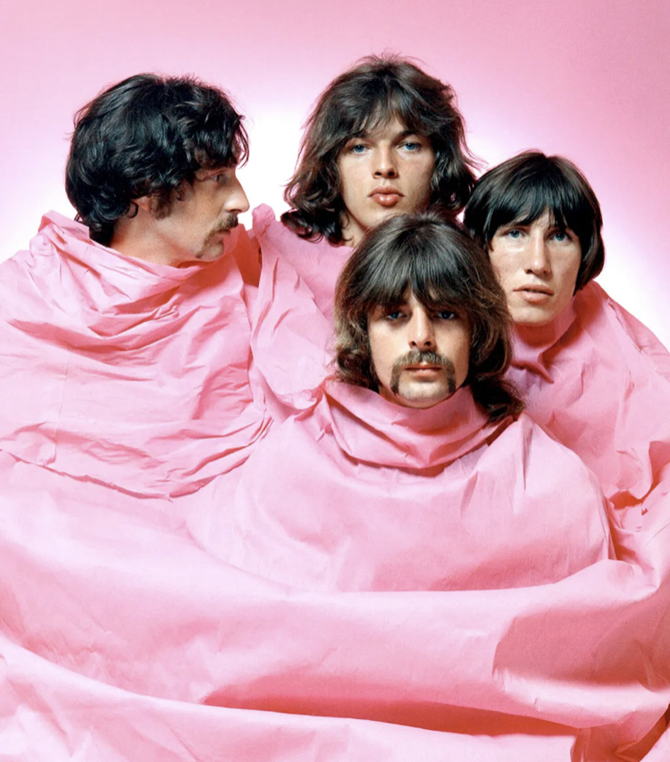
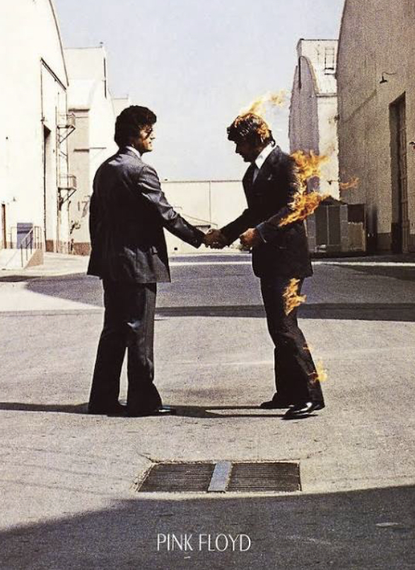

Pink Floyd
- Members:
- Syd Barrett (died 2006)
- Bob Klose
- David Gilmour
- Roger Waters
- Richard Wright (died 2008)
- Nick Mason

Biography
Pink Floyd formed in London around 1963. Many of the forming members were studying in university. They have a storied and detailed history, so it's better served to just write the highlights:
- 1967: Pink Floyd signs with EMI and release The Piper at the Gates of Dawn.
- 1967: David Gilmour joins the band to replace Syd Barrett, who was having a mental health crisis induced by drugs and psychosis.
- 1967 - 1972: They release a couple other albums.
- 1973: The band team's up with Alan Parsons (also the creator of a secret space project co-opted by Dr. Evil) and release The Dark Side of the Moon.
- 1975 and 1977: They release Animals (1977) and Wish You Were Here (1975) and Syd Barrett eerily visits the studio while they record.
- 1979: Roger Waters generally starts to hate people and writes The Wall.
Not long after, Roger Waters decided that, being people, he also hated his band members too. They have since gone separate and interesting directions.

My favorite film
Home